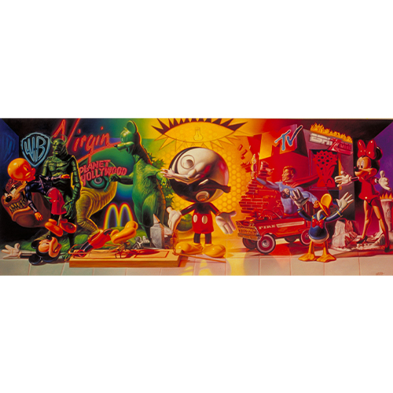

Exhibitions
Ron English: Reimagining “Guernica” / La réinvention du “Guernica” (Gernika-Lumo, Bizkaia: Museo de la Paz de Gernika, 2017), exhibition catalogue, digital flip-book, accessed April 4, 2026, https://www.museodelapaz.eus/en/3d-flip-book/ron-english-guernica-berriro-imajinatzen-reimaginando-el-guernica-eng_fr/.
Notes
This work references Pablo Picasso’s Guernica (1937).